Laporan Praktikum Aplikasi Mobile: Navigasi & Passing Data; Navigator, Konsep Stack, dan Constructor
1. Pendahuluan
Praktikum keempat Aplikasi Mobile ini membahas perpindahan antarhalaman pada Flutter menggunakan Navigator yang bekerja dengan konsep tumpukan (stack). Navigator.push digunakan untuk meletakkan halaman baru di tumpukan teratas, sedangkan Navigator.pop digunakan untuk menutup halaman teratas dan kembali ke halaman sebelumnya. Selain itu, praktikum ini juga menerapkan pengiriman data antarhalaman melalui constructor, sehingga halaman detail transaksi dapat menampilkan informasi yang sesuai dengan baris transaksi yang dipilih pada dashboard. Struktur proyek dibagi menjadi empat file terpisah, yaitu main.dart, dashboard_screen.dart, add_transaction_screen.dart, dan transaction_detail_screen.dart.
Tujuan Praktikum:
- Mahasiswa mampu menerapkan Navigator.push untuk berpindah ke layar baru.
- Mahasiswa mampu menggunakan Navigator.pop untuk menutup layar setelah aksi selesai.
- Mahasiswa mampu mengirim data antarlayar melalui constructor.
2. Langkah Kerja
A. Konfigurasi Aplikasi Utama (main.dart)
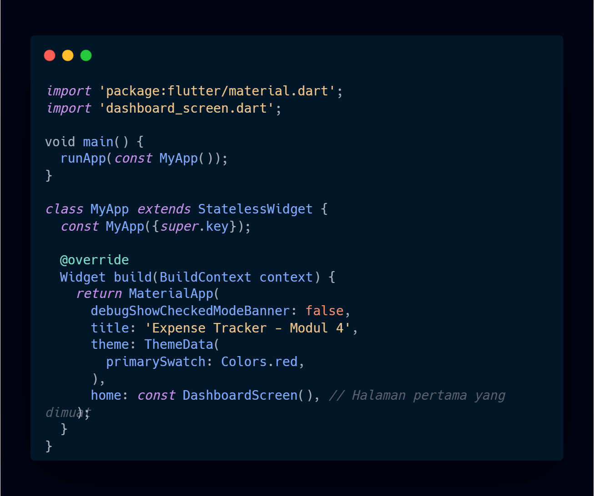
Kode Program: lib/main.dartFile main.dart menjadi titik awal aplikasi melalui fungsi main() yang memanggil runApp(). Class MyApp mengembalikan MaterialApp dengan tema primarySwatch merah sesuai Modul 4, menonaktifkan banner debug, dan menetapkan DashboardScreen sebagai halaman home, sehingga DashboardScreen menjadi halaman pertama yang berada di dasar tumpukan Navigator.
B. Membuat Halaman Detail Transaksi (Variabel Final & Constructor)
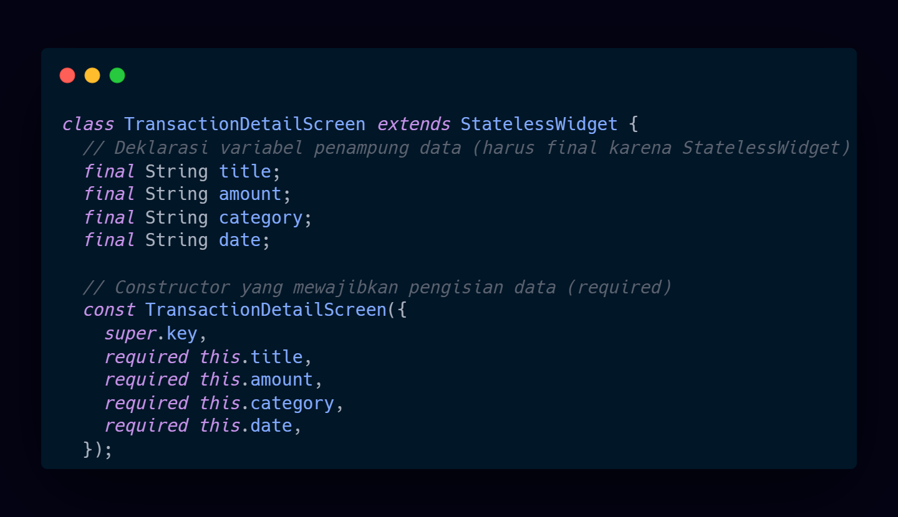
Kode Program: Variabel dan Constructor TransactionDetailScreenDibuat file transaction_detail_screen.dart berisi TransactionDetailScreen yang diturunkan dari StatelessWidget. Empat variabel final bertipe String, yaitu title, amount, category, dan date, dideklarasikan sebagai penampung data yang dikirim dari halaman sebelumnya. Variabel tersebut harus final karena StatelessWidget tidak dapat mengubah datanya setelah dibangun. Constructor menggunakan kata kunci required pada setiap parameter, sehingga halaman ini tidak dapat dibuka tanpa data lengkap yang diserahkan oleh halaman pemanggilnya.
C. Tampilan Halaman Detail & Widget Pembantu _buildDetailRow
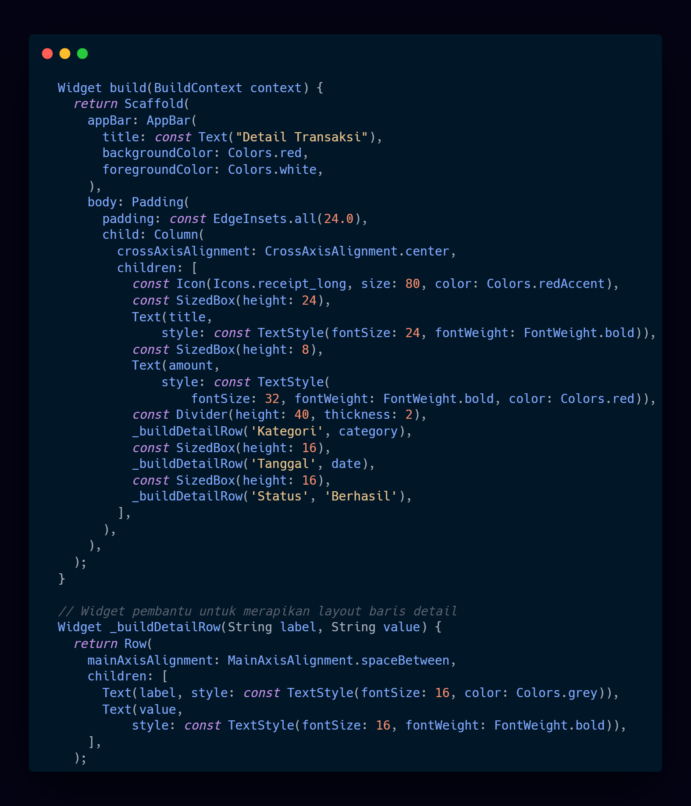
Kode Program: Method build dan _buildDetailRow pada TransactionDetailScreenMethod build mengembalikan Scaffold dengan AppBar "Detail Transaksi" berwarna merah. Isi halaman berupa Column yang menampilkan ikon receipt_long berukuran besar, diikuti Text title dan Text amount yang langsung memakai data dari constructor, lalu Divider sebagai pemisah. Informasi kategori, tanggal, dan status ditampilkan melalui method pembantu _buildDetailRow yang mengembalikan Row spaceBetween berisi label berwarna abu-abu di kiri dan nilai bercetak tebal di kanan, sehingga setiap baris detail memiliki format yang seragam tanpa menuliskan kode yang sama berulang kali.
D. Struktur Dashboard & Kartu Saldo
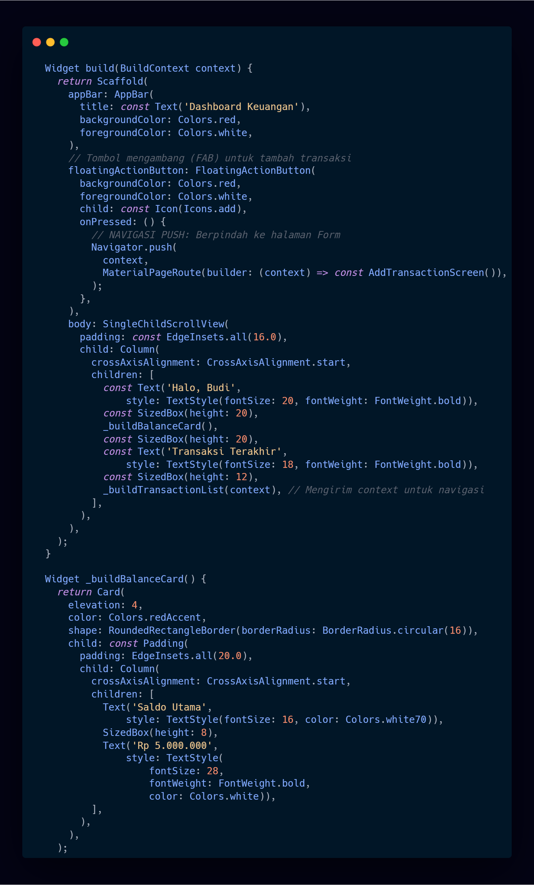
Kode Program: Scaffold DashboardScreen dan _buildBalanceCardDashboardScreen pada dashboard_screen.dart menggabungkan antarmuka Modul 1 dan Modul 2 dalam satu Scaffold dengan AppBar "Dashboard Keuangan". Bagian body dibungkus SingleChildScrollView berisi Column yang menyusun teks sapaan, kartu saldo, judul Transaksi Terakhir, dan daftar transaksi. Kartu saldo dibangun melalui method _buildBalanceCard yang mengembalikan Card berwarna redAccent dengan sudut membulat, sedangkan daftar transaksi dibangun melalui _buildTransactionList yang menerima parameter context agar dapat digunakan oleh Navigator di dalamnya.
E. Pindah ke Detail & Mengirim Data (Push)
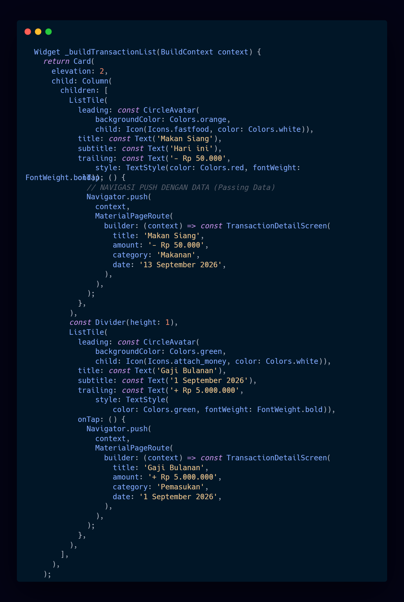
Kode Program: onTap ListTile dengan Navigator.pushSetiap ListTile pada _buildTransactionList diberi properti onTap yang memanggil Navigator.push dengan MaterialPageRoute. Builder pada MaterialPageRoute membuat objek TransactionDetailScreen sekaligus mengisi constructor-nya dengan data milik baris yang diklik. Baris Makan Siang mengirim nominal "- Rp 50.000" dengan kategori Makanan, sedangkan baris Gaji Bulanan mengirim nominal "+ Rp 5.000.000" dengan kategori Pemasukan, sehingga halaman detail yang terbuka selalu sesuai dengan transaksi yang dipilih.
F. Tombol Tambah Transaksi (FloatingActionButton)
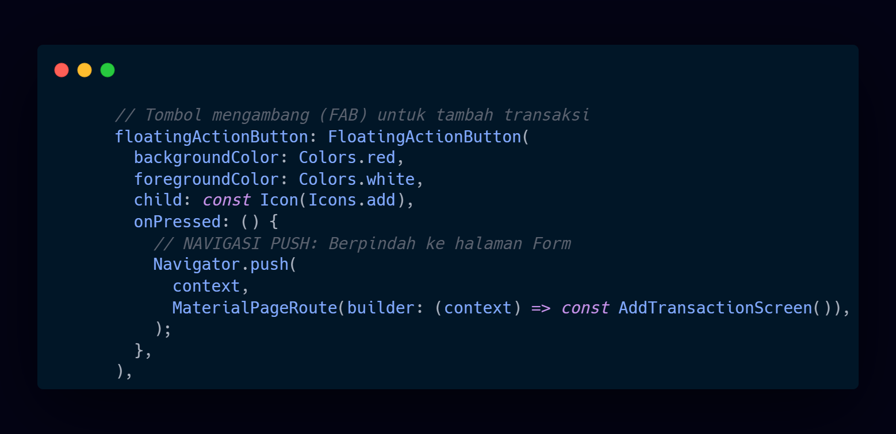
Kode Program: FloatingActionButton menuju AddTransactionScreenScaffold dashboard dilengkapi FloatingActionButton berwarna merah dengan ikon add. Saat ditekan, tombol ini memanggil Navigator.push untuk membuka AddTransactionScreen. Berbeda dengan navigasi ke halaman detail, perpindahan ini tidak membawa data apa pun karena halaman formulir justru bertugas menerima masukan baru dari pengguna.
G. Menutup Layar / Kembali Otomatis (Pop)
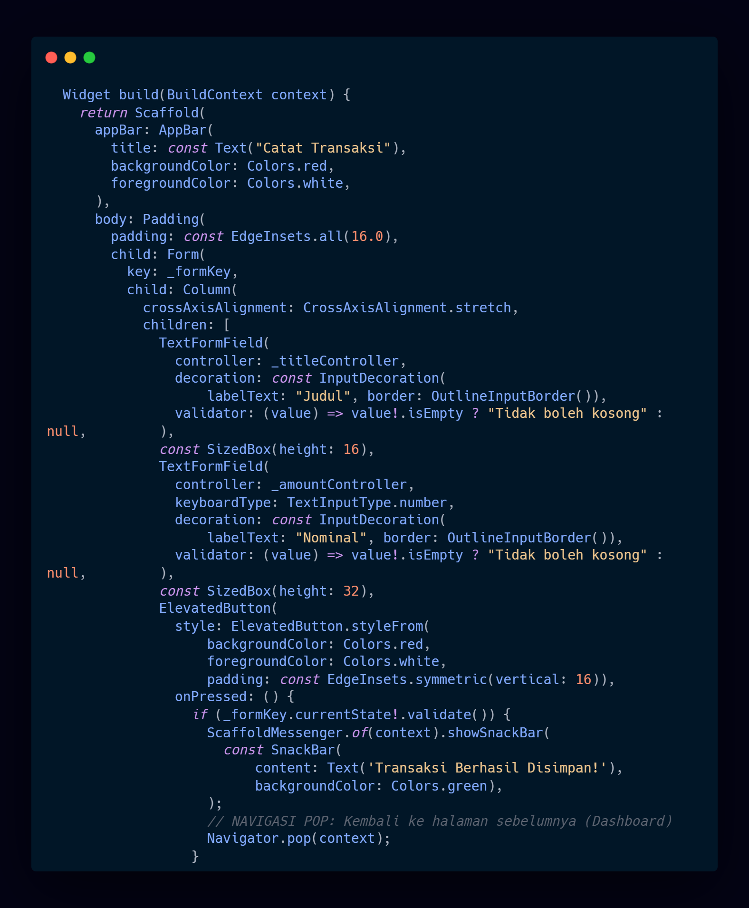
Kode Program: AddTransactionScreen dengan Navigator.popPada add_transaction_screen.dart, formulir berisi kolom Judul dan Nominal yang masing-masing memiliki validator wajib diisi. Di dalam onPressed tombol Simpan, setelah _formKey.currentState!.validate() bernilai true, SnackBar "Transaksi Berhasil Disimpan!" ditampilkan, lalu Navigator.pop(context) dipanggil untuk menghapus halaman formulir dari tumpukan. Akibatnya, pengguna otomatis kembali ke dashboard tanpa harus menekan tombol kembali secara manual.
Hasil Akhir
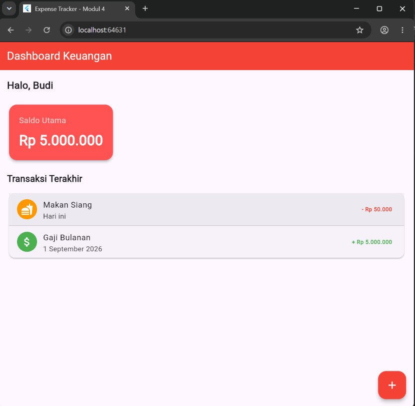
Hasil Akhir: Tampilan Awal Dashboard KeuanganSaat aplikasi dijalankan, dashboard menampilkan AppBar merah bertuliskan "Dashboard Keuangan", teks sapaan, kartu saldo berwarna merah, serta daftar Transaksi Terakhir yang berisi Makan Siang dan Gaji Bulanan. FloatingActionButton dengan ikon tambah terlihat di pojok kanan bawah layar.
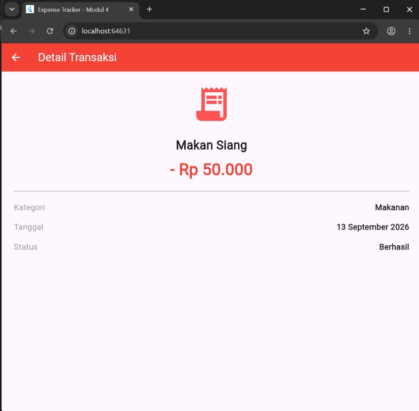
Hasil Akhir: Detail Transaksi Makan Siang (Pengeluaran)Ketika baris Makan Siang diklik, halaman Detail Transaksi terbuka dan menampilkan judul Makan Siang, nominal pengeluaran, kategori Makanan, tanggal transaksi, serta status Berhasil. Tombol panah kiri muncul secara otomatis di AppBar karena halaman ini dibuka melalui Navigator.push, dan menekannya akan mengembalikan pengguna ke dashboard.
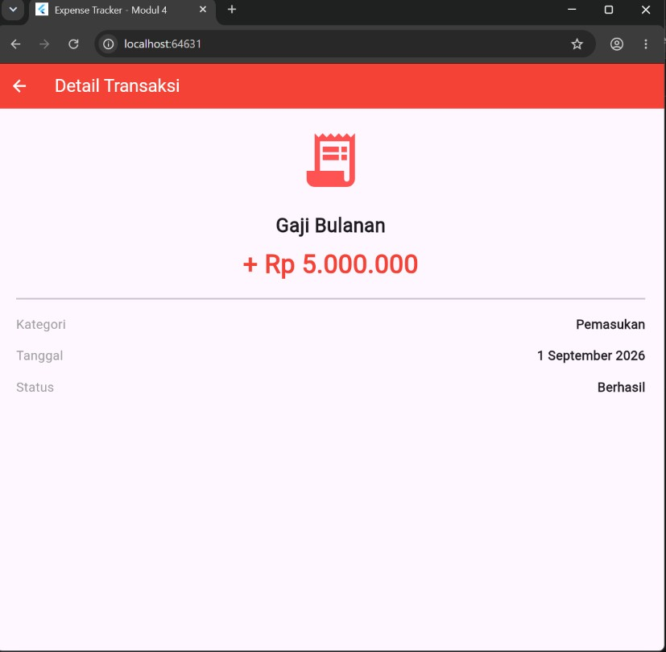
Hasil Akhir: Detail Transaksi Gaji Bulanan (Pemasukan)Ketika baris Gaji Bulanan diklik, halaman detail yang sama menampilkan data yang berbeda, yaitu judul Gaji Bulanan, nominal pemasukan, dan kategori Pemasukan. Hal ini menunjukkan bahwa satu halaman TransactionDetailScreen dapat digunakan ulang untuk berbagai transaksi karena isinya sepenuhnya bergantung pada data yang dikirim melalui constructor.
3. Tugas/Latihan: Menambahkan Input Tanggal Transaksi
A. Menyiapkan Controller dan Fungsi Pilih Tanggal
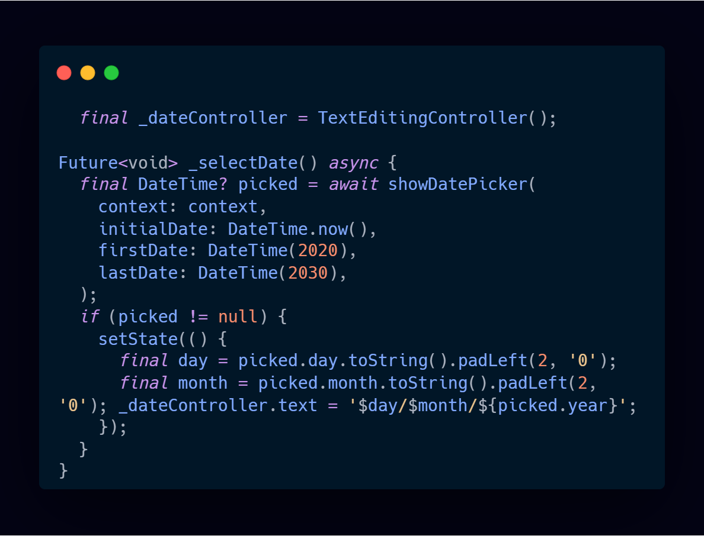
Kode Program: Controller dan Fungsi _selectDatePada _AddTransactionScreenState ditambahkan TextEditingController bernama _dateController untuk menampung teks tanggal, beserta method _selectDate yang memanggil showDatePicker bawaan Flutter. Setelah pengguna memilih tanggal, nilai day, month, dan year dari objek DateTime diformat secara manual menjadi pola DD/MM/YYYY dengan bantuan padLeft(2, '0') agar tanggal dan bulan satu digit tetap tampil dua digit, kemudian hasilnya dimasukkan ke _dateController.text di dalam setState.
B. Menambahkan Input Tanggal pada Form
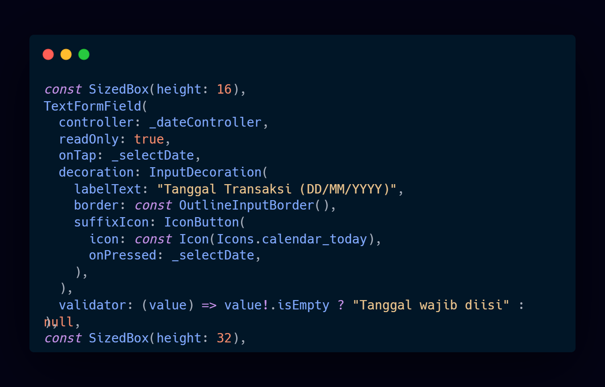
Kode Program: TextFormField Tanggal TransaksiTextFormField baru ditempatkan setelah kolom Nominal dan sebelum tombol Simpan, dengan controller _dateController dan properti readOnly bernilai true sehingga tanggal hanya dapat diisi melalui date picker. Date picker dapat dibuka dengan mengetuk kolom melalui onTap maupun menekan IconButton kalender pada suffixIcon. Validator pada kolom ini mengembalikan pesan "Tanggal wajib diisi" apabila kolom masih kosong, sehingga ikut diperiksa ketika tombol Simpan menjalankan validasi formulir.
Hasil Tampilan Tugas
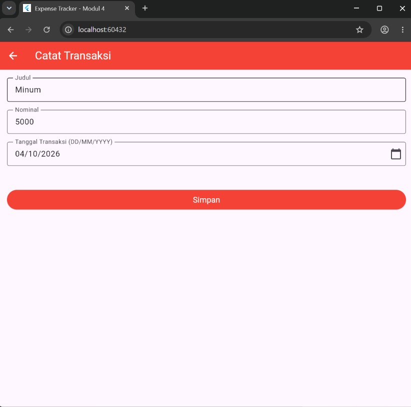
Hasil Tampilan Tugas: Kolom Tanggal TerisiSetelah tanggal dipilih melalui date picker, kolom Tanggal Transaksi menampilkan tanggal dengan format DD/MM/YYYY di bawah kolom Nominal dan di atas tombol Simpan.
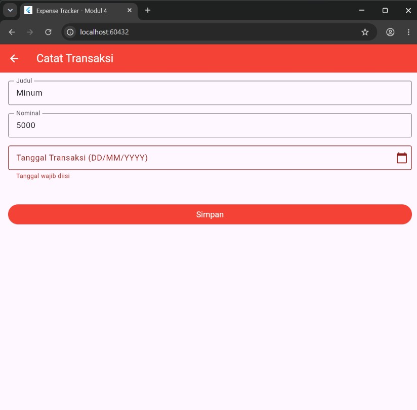
Hasil Tampilan Tugas: Validasi Kolom Tanggal KosongApabila tombol Simpan ditekan saat kolom Tanggal Transaksi masih kosong, pesan error berwarna merah muncul di bawah kolom tersebut dan halaman formulir tidak ditutup, karena Navigator.pop hanya dijalankan setelah seluruh kolom lolos validasi.
4. Kesimpulan
Berdasarkan praktikum yang telah dilakukan, dapat disimpulkan bahwa Navigator pada Flutter mengelola halaman dalam bentuk tumpukan, di mana Navigator.push digunakan untuk membuka halaman baru di atas halaman yang sedang aktif dan Navigator.pop digunakan untuk menutupnya kembali. Pengiriman data antarhalaman dapat dilakukan melalui constructor dengan variabel final dan parameter required, sehingga satu halaman detail dapat menampilkan isi yang berbeda sesuai data yang diterimanya. Penempatan Navigator.pop setelah validasi formulir juga memastikan halaman hanya ditutup ketika seluruh data, termasuk tanggal transaksi, telah diisi dengan benar.